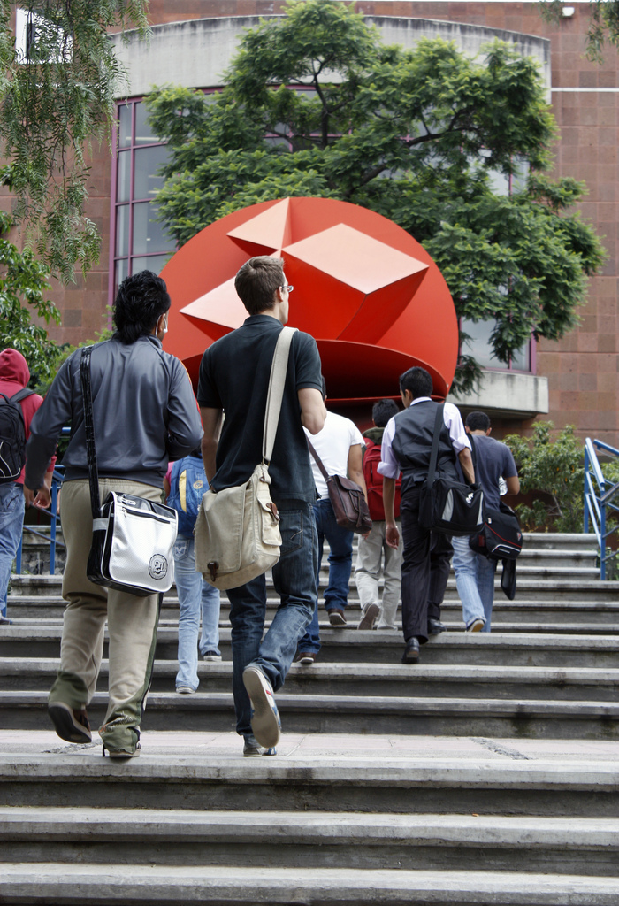

Alcaldia de Montertia comprometida con la educacion del Pueblo

Educacion en colombia
La calidad de la educación en Colombia, una mirada crítica
“Se hace necesario implementar reformas que no se queden en el papel, reformas que tenga un gran impacto en el desarrollo integral del niño”

Trahajando Por El Desarrollo y la Educacion
La Secretaría de Educación Departamental, informa que el año 2018 es el año de apropiación del Programa Todos a Aprender, quetraerá consigo la oportunidad de culminar y consolidar procesos que van a permitir a los establecimientos educativos apropiarse de los componentes del Programa, lo cual esperamos que posibilite la continuidad del trabajo decidido y constante por el iento de los aprendizajes de los estudiantes. Para llevar a cabo este proceso de transferencia y apropiación, es muy importante contar con su apoyo para la selección de un líder de transferencia y/o apropiación en cada establecimiento educativo, generando la posibilidad de contar con un liderazgo enfocado en la continuidad y sostenibilidad de los procesos desarrollados por el Programa Todos a Aprender, tal